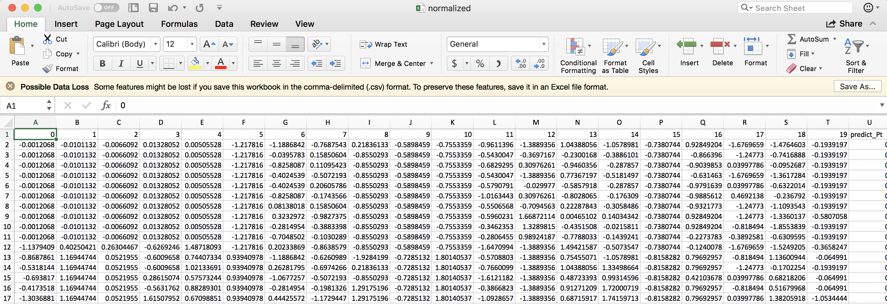

Cleaning input data¶
Now, let’s imagine a slightly more complicated (but realistic) scenario where some of the value of your X feature matrix are not known. Open your example_data.csv file, and randomly remove some values of the X feature columns in your dataset. Don’t remove any y data values in the “Reduced Barrier (eV)” column. You’ll need to add the following section to your input file to handle cleaning of the input data:
Example:
[DataCleaning]
cleaning_method = imputation
imputation_strategy = mean
What this does is perform data imputation, where each missing value will be replaced with the mean value for that particular feature column. Other data cleaning options include imputation with median values, simply removing rows of data with missing values, or performing a probabilistic principal component analysis to fill in missing values.
From inspecting the data file in the parent directory to that in the subsequent directories, you can see that the missing values (here, the first 10 rows of the first several features were removed) have been replaced with the mean values for each respective feature column:

After data cleaning with imputation:
